auxjad.remove_repeated_dynamics¶
-
auxjad.remove_repeated_dynamics(container: abjad.core.Container.Container, *, ignore_hairpins: bool = False, reset_after_rests: bool = False)¶ A function which removes all consecutive repeated dynamics. It removes consecutive effective dynamics, even if separated by any number of notes without one. It resets its memory of what was the previous dynamic every time it finds a hairpin, since notation such as
"c'4\f\> c'4\f\>"is quite common; this behaviour can be toggled off using theignore_hairpinskeyword argument. By default, it remembers the previous dynamic even with notes separated by rests; this can be toggled off usingreset_after_rests=True. To set a maximum length of silence after which dynamics are restated, setreset_after_reststo a duration usingabjad.Duration()or any other duration format accepted by Abjad.When two consecutive leaves have identical dynamics, the second one is removed:
>>> staff = abjad.Staff(r"\time 3/8 c'4\pp d'8\pp | c'4\f d'8\f") >>> abjad.f(staff) \new Staff { \time 3/8 c'4 \pp d'8 \pp c'4 \f d'8 \f }
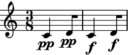>>> auxjad.remove_repeated_dynamics(staff) >>> abjad.f(staff) \new Staff { \time 3/8 c'4 \pp d'8 c'4 \f d'8 }
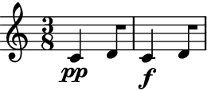The function also removes dynamics that are separated by an arbitrary number of leaves without dynamics:
>>> staff = abjad.Staff(r"\time 3/8 c'4\p d'8 | e'4.\p | c'4\p d'8\f") >>> abjad.f(staff) \new Staff { \time 3/8 c'4 \p d'8 e'4. \p c'4 \p d'8 \f }
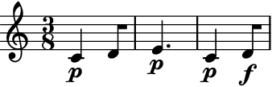>>> auxjad.remove_repeated_dynamics(staff) >>> abjad.f(staff) \new Staff { \time 3/8 c'4 \p d'8 e'4. c'4 d'8 \f }
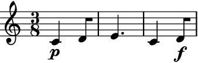The input container can also handle subcontainers:
>>> staff = abjad.Staff([abjad.Note("c'2"), ... abjad.Chord("<d' f'>2"), ... abjad.Tuplet((2, 3), "g2 a2 b2"), ... ]) >>> abjad.attach(abjad.Dynamic('ppp'), staff[0]) >>> abjad.attach(abjad.Dynamic('ppp'), staff[1]) >>> abjad.attach(abjad.Dynamic('ppp'), staff[2][0]) >>> abjad.f(staff) \new Staff { c'2 \ppp <d' f'>2 \ppp \times 2/3 { g2 \ppp a2 b2 } }
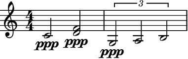>>> auxjad.remove_repeated_dynamics(staff) >>> abjad.f(staff) \new Staff { c'2 \ppp <d' f'>2 \times 2/3 { g2 a2 b2 } }
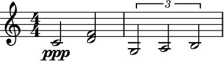By default, repeated dynamics with hairpins in between are not removed, but consecutive ones will.
>>> staff = abjad.Staff(r"c'2\p\< d'2\f\> | c'2\f d'2\f | e'1\p") >>> abjad.f(staff) \new Staff { c'1 \p \< d'1 \f \> c'1 \f d'1 \f e'1 \p }
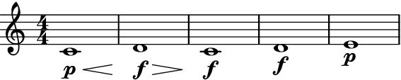>>> auxjad.remove_repeated_dynamics(staff) >>> abjad.f(staff) \new Staff { c'1 \p \< d'1 \f \> c'1 \f d'1 e'1 \p }
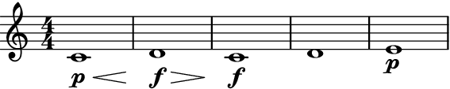To override the previous behaviour, set
ignore_hairpins=Trueand hairpins will be ignored.>>> staff = abjad.Staff(r"c'2\p\< d'2\f\> | c'2\f d'2\f | e'1\p") >>> abjad.f(staff) \new Staff { c'1 \p \< d'1 \f \> c'1 \f d'1 \f e'1 \p }

>>> auxjad.remove_repeated_dynamics(staff, ignore_hairpins=True) >>> abjad.f(staff) \new Staff { c'1 \p \< d'1 \f \> c'1 d'1 e'1 \p }
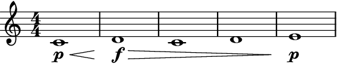By default, rests are treated just like any other leaf and thus notes with an identical dynamic separated by an arbitrary number of rests will be considered as repeated and the second dynamic will be removed.
>>> staff = abjad.Staff(r"c'4\pp r2. | c'4\pp") >>> auxjad.remove_repeated_dynamics(staff) >>> abjad.f(staff) \new Staff { c'4 \pp r2. c'4 }

To override the previous behaviour, set
reset_after_rests=Trueand dynamics will always be restated after a rest.>>> staff = abjad.Staff(r"c'4\pp r2. | c'4\pp") >>> auxjad.remove_repeated_dynamics(staff, reset_after_rests=True) >>> abjad.f(staff) \new Staff { c'4 \pp r2. c'4 \pp }

The argument
reset_after_reststakes not only boolean values but also duration (abjad.Duration, tuple, float, etc.). This sets the maximum length of rests before which identical dynamics are restated. If the total length of rests falls below that value, then repeated dynamics are removed.In the case below, a rest of
r2. is shorter than a duration of (4, 4), so the repeated dynamic is removed.>>> staff = abjad.Staff(r"c'4\pp r2. | c'4\pp") >>> auxjad.remove_repeated_dynamics(staff, reset_after_rests=(4, 4)) >>> abjad.f(staff) \new Staff { c'4 \pp r2. c'4 }
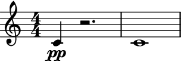But setting the duration to 2/4 forces the dynamic to be restated.
>>> staff = abjad.Staff(r"c'4\pp r2. | c'4\pp") >>> auxjad.remove_repeated_dynamics(staff, reset_after_rests=2/4) >>> abjad.f(staff) \new Staff { c'4 \pp r2. c'4 \pp }
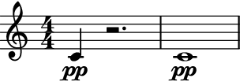The function also handles measure rests with
reset_after_rests.>>> staff = abjad.Staff(r"c'4\pp r2. | c'4\pp r2. |R1 | c'4\pp") >>> auxjad.remove_repeated_dynamics( ... staff, ... reset_after_rests=abjad.Duration(4, 4), ... ) >>> abjad.f(staff) \new Staff { c'4 \pp r2. c'4 r2. R1 c'4 \pp }
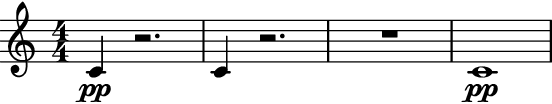